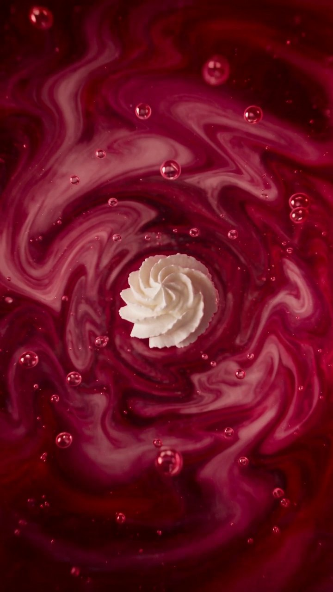
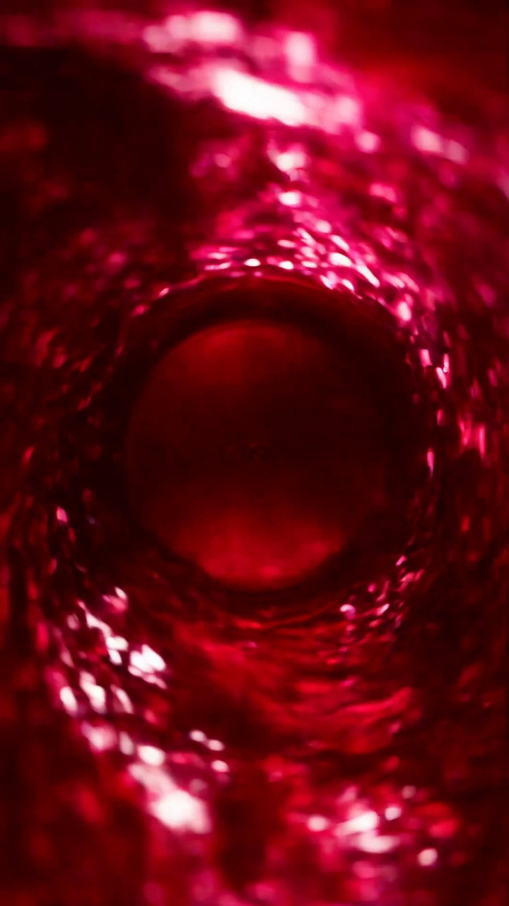
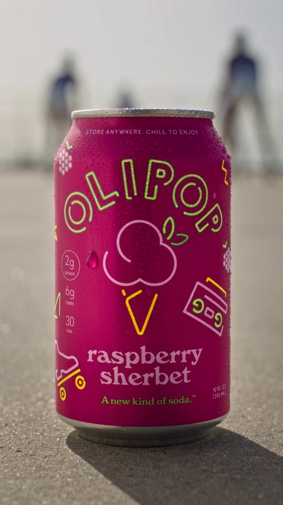
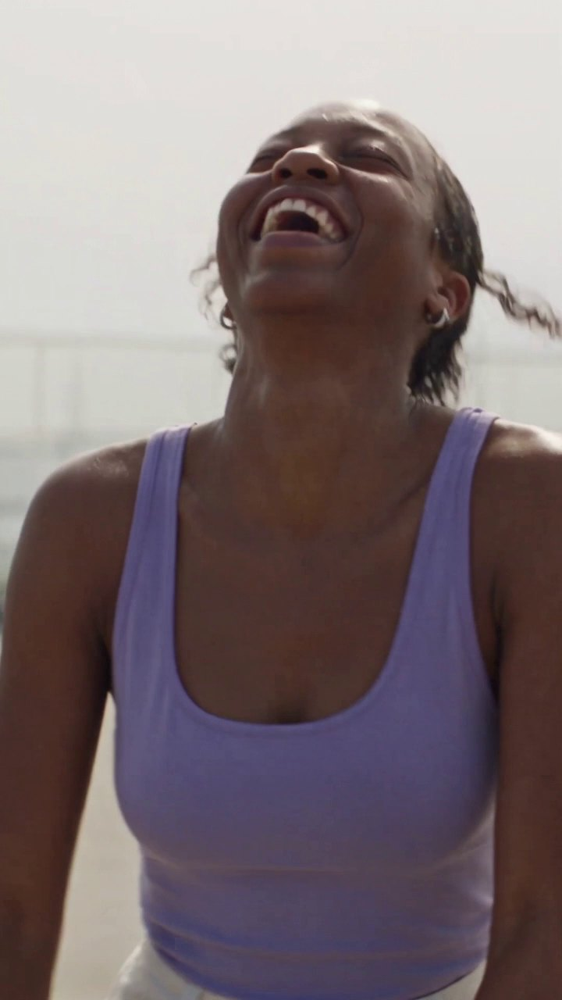
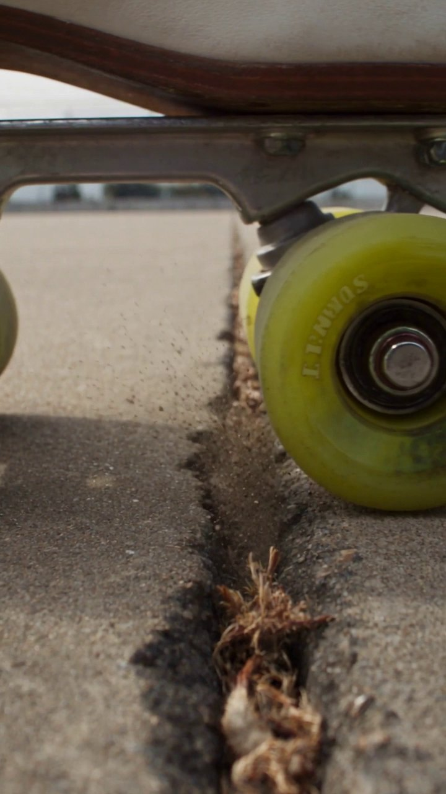
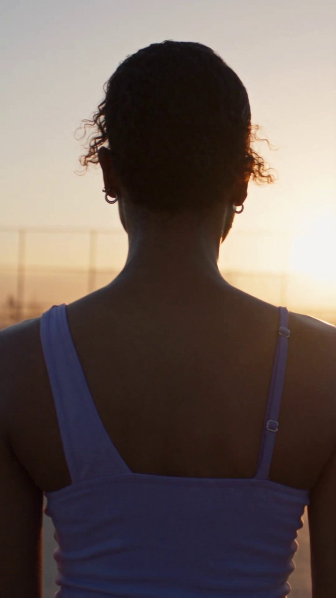

Every time she sips, you go inside the can for a second, and nobody stops skating.
The Inside Lane · :26 · sound on
OLIPOP relaunched this year as the feel good soda. New identity, new cans, a national spot, a sonic signature. The whole platform moved away from explaining gut health and toward wanting the drink.
Watch the campaign closely though and the can never gets a beauty shot. It sits in a hand, small in frame, soft in the background. No pour. No fizz. No condensation breaking. And the one moment where the film goes inside the product, it goes to animation.
That is the whole opportunity. The most craveable thing a soda brand owns is the liquid, and the liquid was the one thing nobody had photographed.
An outdoor rink at the hottest hour. A skater and her crew, cans in hand, refusing to slow down. And a single conceit: every sip cuts the camera inside the can, then drops it right back on the floor mid glide.
The interior is treated as a real location. One hard shaft of light from above, warm ruby, physical bubbles, a cream bloom entering from below and marbling through before it resolves clear. Not a particle effect. A room.
Raspberry Sherbet is 7% juice, so the liquid is translucent, closer to cranberry than to a milkshake. The sherbet is a flavour promise, not a texture. The film makes that tension the hero: the scoop that isn't there.






One light source across the whole film. Hard high sun bouncing off pale concrete as the only fill, and inside the can that same sun reads as a shaft through the mouth, so the interior never breaks grade with the exterior.
Deep focus on the skate work at T5.6, macro at T4 with the focus plane one bubble deep. 24fps at a 180 degree shutter, so every wheel smears at speed. Three permitted imperfections and no more: halation on wet aluminium, one focus hunt, edge fringing.
The label was locked to the real can from the first frame to the last. Every icon, every badge, every line of type.
I direct product films and campaign motion for beverage, beauty and lifestyle brands. If you want the version of this made for your flavour, your can, your drop, that is a conversation I would enjoy.
Direct · nandyvisuals@gmail.com
Unsolicited spec work. Not commissioned by, affiliated with, or endorsed by OLIPOP. Product design, packaging and all brand marks belong to OLIPOP. Made independently to demonstrate a creative approach, and shared as a portfolio piece only.